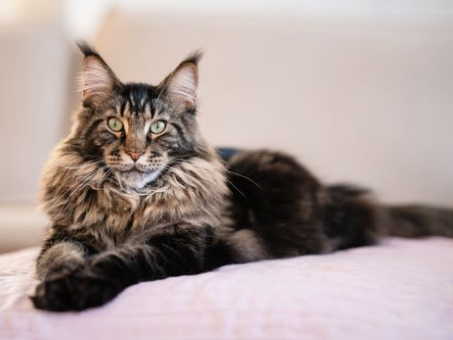
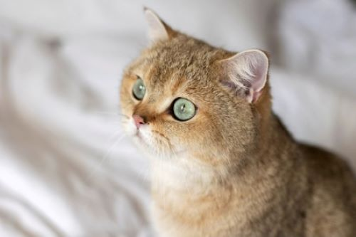

Мейн-кун
Характерні риси: Великі розміри, масивна статура, пучки шерсті
на вухах та довгий пухнастий хвіст. Їх часто називають "ніжними
велетнями".
-
Особливості: Дуже розумні, грайливі, орієнтовані на людей.
Вони є однією з найстаріших природних порід Північної Америки.
-
Догляд: Потребують регулярного розчісування через довгу густу
шерсть.

Відео про мейн-кунів
Британська короткошерста
Характерні риси: Міцна, "плюшева" статура, кругла голова та
густа, коротка шерсть. Зовні нагадують плюшевих ведмедиків.
-
Особливості: Спокійні, чарівні, грайливі, але не надто
вимогливі. Вони люблять гратися, але також цінують час наодинці.
Добре підходять для проживання в квартирі.
-
Догляд: Мінімальний. Достатньо періодичного розчісування.

Відео про британських короткошерстих котів